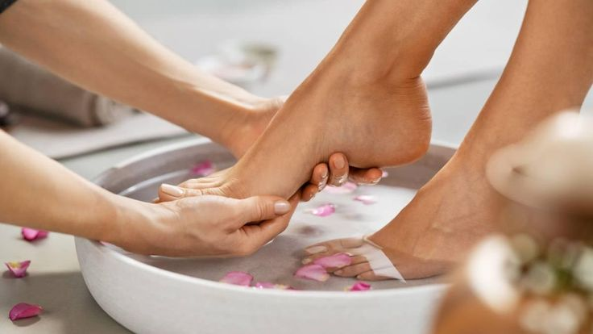
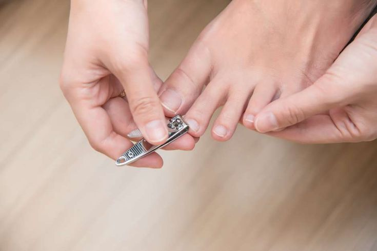
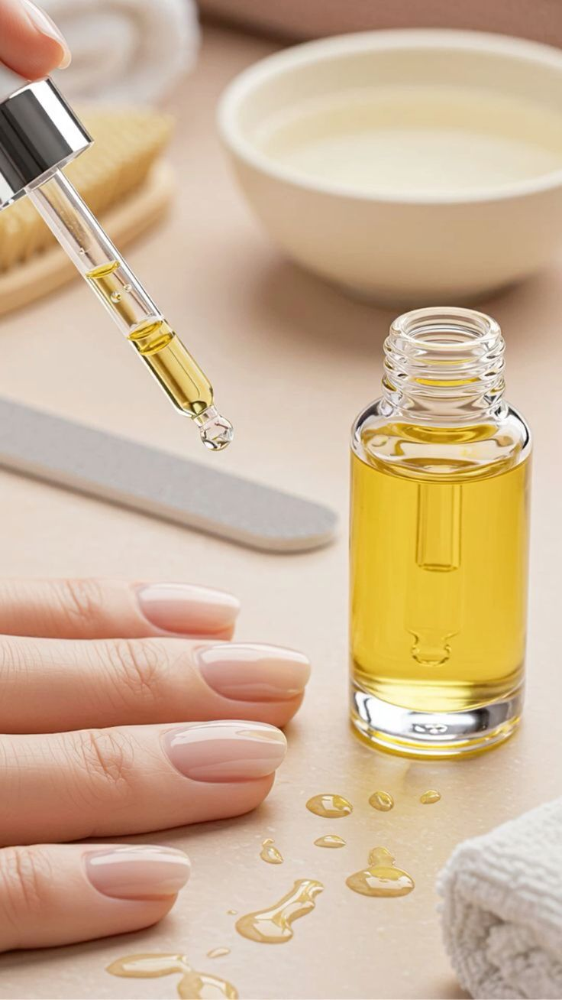
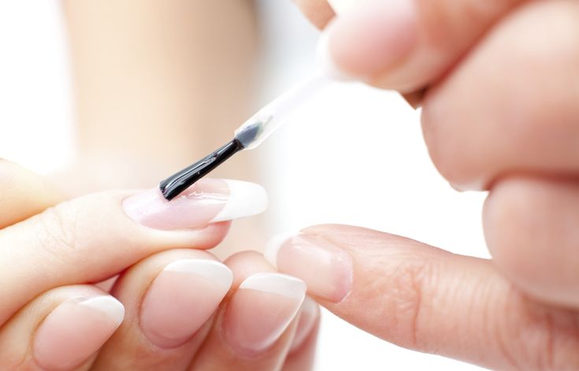
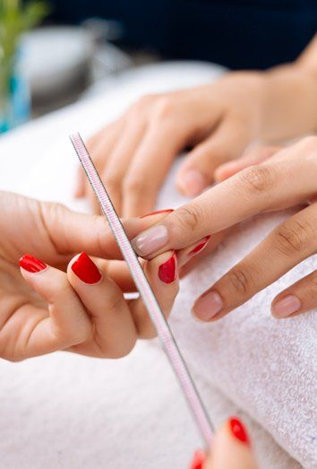

Guía práctica para pies sanos: higiene, corte correcto y acabado duradero. A continuación
encontrarás pasos y recomendaciones para una pedicura segura y estilosa.
1
Higiene y preparación del pie

Comienza con un remojo tibio de 5-10 minutos para ablandar la piel y las cutículas. Limpia
y seca bien entre los dedos para evitar humedad atrapada. Usa una piedra pómez o lima para
eliminar durezas con cuidado.
2
Corte correcto y forma segura

Corta las uñas rectas y evita redondearlas demasiado en las esquinas para prevenir
uñas encarnadas. Lima los bordes ligeramente y elimina imperfecciones sin rebajar la placa
en exceso.
3
Cuidado de cutículas y piel alrededor

Evita cortar las cutículas; empújalas suavemente después del remojo. Hidrata la piel con
cremas ricas en urea o aceites para evitar grietas y sequedad. Si hay callos grandes, acude
a un profesional.
4
Esmalte y acabados para mayor durabilidad

Usa base protectora para evitar manchas y aplica capas finas de color. Sella con un top
coat de buena calidad y deja secar completamente antes de calzarte. En climas húmedos,
opta por productos de secado rápido y fórmulas flexibles.
5
Prevención y mantenimiento entre visitas

Mantén los pies limpios y secos, recorta y lima regularmente, aplica crema y revisa signos
de infección. Usa calzado adecuado que no presione los dedos y cambia calcetines con
frecuencia para evitar acumulación de humedad.
Comentarios
Priscila Maltes
12/10/2025
Muy útil: seguiré los pasos para evitar uñas encarnadas y mantener mis pies suaves.